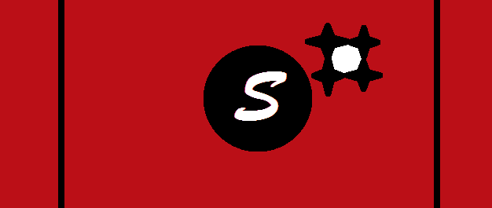

CONSTITUIÇÃO SVÉRKIANTE

Sinto a fúria de tuas palavras mas não entendo nada do que você diz.
Segue abaixo a constituição da família mais renomada entre os reinos Lusos-Américos:
Para inicio de parlamentações, nosso amado reino foi fundado com base na liberdade de expressão e de imprensa, porém, caso recorra a violência
gatuita, racismo, xenofobia e/ou homofobia seremos obrigados a expulsa-lo do reino, sem autorização de retorno.
Somos uma monarquia parlamentarista constitucional, nínguém nem mesmo o rei Asphodel (ave rei) tem direito a ultrapassar as regras, caso ocorra, este será deposto e seu
sucessor nomeado como o novo As (nome dado a todos os reis antes de serem aclamados como tal).
Todo cidadão Svér, tem o direito de se armar e/ou montar seu próprio exército. Em caso de conflitos armados, o rei deve tomar partido tanto monetariamente, quanto belicamente,
para com seus aliados, caso venha a perder, perderá também seu trono e seu direito de ser Asphodel, passando a mão monarca para o lider vencedor.
O reino de Svérkèr, é dividido em 4 sub-regiões, o Dacondo, o Osgehamde, o Lus e a Schyla. Cada um destes com sua peculiaridade e sua exuberancia.
Por falar em sub-regiões é terminantemente proibido a separação e/ou a independência de quais quer regiões, sub pena de exílio aquele que tentar descumprir.
Ideologias políicas do mundo terreno, estão proibidas tanto o socialismo quanto o capitalismo são enxergadas como um mal do ser imperfeito, não tente trazê-las
para o nosso mundo, pois já somos bem felizes com o Ilianismo (baseadas nas teorias do profeta Ili que mostra um mundo onde a moeda existe, mas quem governa é
a inteligência).
Somos amantes do conhecimento e das artes(mais especificamente da música), por isso, sinta-se a vontade para apreciar os estudos na região que for de sua escolha,
o curso de Vilfidi(talves vocês conheçam como matemática) é o mais buscado e concorrido, exceto apenas por Crisfidi(conhecido pelos terrenos como magistério) quem
é a nossa especialidade, não existindo profissão mais honrosa que a de ensinar.
A justiça deve prevalecer sempre sobre a covardia, por isso, qualquer cidadão Svérkiante tem o direito de ser representado na lei de forma justa e igualitária.
Assinatura do primeiro Asphodel: Asphodel 0.0.1